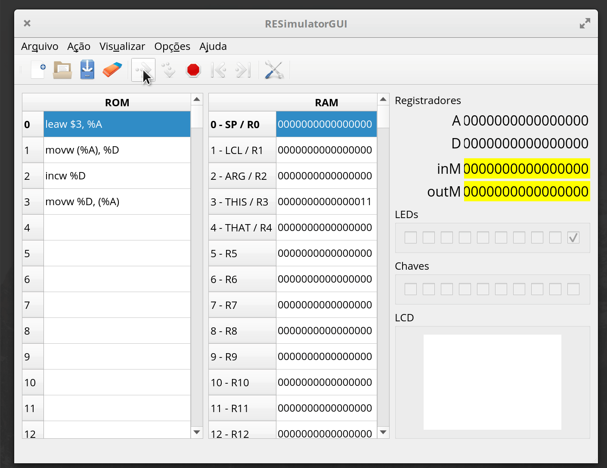

ASM - Mapa de memória
A forma na qual a maioria das CPUs acessam periféricos (teclado/ mouse/ USB/ tela/ ...) é a do periférico mapeado em memória. Essa técnica utiliza da capacidade do computador de escrever e ler da memória RAM, fazendo com que regiões de endereços da memória não sejam uma 'memória' física, mas sim um periférico do computador.

Vamos trabalhar com o exemplo do nosso Z01, a memória é composta de:
- RAM
- LCD
- Chaves
- LEDs
Nesse nosso hardware a memória que é visível pela CPU é organizada da seguinte maneira:
| Endereço | Periférico | Leitura (r) / Escrita (w) |
|---|---|---|
| 0 - 16383 | RAM | r/w |
| 16384 - 21183 | LCD | w |
| 21184 | LED | w |
| 21185 | SW | r |
RAM
| Endereço | Periférico | Leitura (r) / Escrita (w) |
|---|---|---|
| 0 - 16383 | RAM | r/w |
A memória RAM é um componente do computador que permite guardar dados voláteis (que vão se perder após o reset do computador). É nela que guardamos as variáveis do programa.
Note
Nossa memória RAM possui 16 bits de largura.
A princípio podemos utilizar qualquer endereço da memória RAM para armazenar dados temporários, isso não será verdade mais para frente do curso, onde iremos organizar nossa memória RAM em secções.
Tip 1
Iremos dar alguns nomes para os endereços específicos da memória RAM:
| endereço | label / nome |
|---|---|
| 0 | SP |
| 1 | LCL |
| 2 | ARG |
| 3 | THIS |
| 4 | THAT |
Example
Vamos fazer um exemplo que lê um dado na RAM[3] o incrementa e salva novamente no mesmo endereço de memória:
leaw $3, %A ; faz %A = 3 (%A aponta para RAM[3])
movw (%A), %D ; move o valor de RAM[%A] para %D
incw %D ; incrementa o valor de D (D = D + 1, D = RAM[3] + 1)
movw %D, (%A) ; move o valor incrementado de volta para a RAM[3]
- Podemos também usar o label
ARGpara referencia o endereço3da memória RAM:
leaw $ARG, %A ; faz %A = 3 (%A aponta para RAM[ARG])


Tip 2
Execute você esse código no simulador! E analise o resultado.
Warning
É necessário notar que a memória RAM não é um registrador e possui uma grande limitação, não podemos realizar uma ação de ESCRITA E LEITURA no mesmo ciclo! O que impossibilita de fazermos o seguinte:
leaw $3, %A
incw (%A) ; Não funciona no nosso hardware!!
addw (%A), %D, (%A) ; Nao funciona no nosso hardware!!
- O assembly permite que vocês escrevam essas operações, porém quando forem executar no hardware o resultado não vai ser o esperado.
LEDs
| Endereço | Periférico | Leitura (r) / Escrita (w) |
|---|---|---|
| 21184 | LED | w |

Os LEDs da FPGA são mapeados no endereço de memória 21184 onde cada bit (9..0) representa um LED, se o bit específico estiver valor 1o LED está aceso e 0 apagado.
Example
Como isso é traduzido para código? Imagine que desejamos acender um LED que nosso computador controla, para isso devemos fazer com que o registrador %A aponte para o endereço de memória na qual o LED está associado e então escreva nele:
leaw $21184, %A ; endereço do LED
movw $1, (%A) ; move valor 1 para ele

Tip 3
Execute você esse código no simulador!
Tip 4
Note que usamos movw $1, (%A). Isso é possível porque nossa ULA é capaz de gerar os valores 1, -1 e 0, mas outros valores não!
SW
| Endereço | Periférico | Leitura (r) / Escrita (w) |
|---|---|---|
| 21185 | SW | r |

Os chaves (SW) da FPGA são mapeados no endereço de memória 21185 onde cada bit (9..0) representa uma chave, se o bit específico estiver valor 1 indica que a chave está ligada (on) e 0 desligada.
Example
O exemplo a seguir copia o valor das chaves para os LEDs:
leaw $21185, %A ; endereço da chave
movw (%A), %D ; copia valor das chaves para %D
leaw $21184, %A ; endereço do LED
movw %D, (%A) ; move valor das chaves para %D

Tip 5
Execute você esse código no simulador!
LCD
| Endereço | Periférico | Leitura (r) / Escrita (w) |
|---|---|---|
| 16384 - 21183 | LCD | w |

O nosso LCD é um dispositivo de 320x240 pixels. Cada linha do endereço de memória do LCD representa 16 pixels do dispositivo, conforme figura anterior. Para acender um pixel, basta colocar 1 ou 0 para apagar.-
endereços do LCD 6
Como nosso LCD possui 320px na horizontal, e como cada endereço de memória acessa 16px por vez,
uma linha é acessível por: 320/16 = 20 endereços. Ou seja, para acessar os primeiros px de cada linha devemos escrever endereço de memória:
- Primeira linha:
16384 + 0 vezes 20: 16384 - Segunda linha:
16384 + 1 vezes 20: 16404 - Terceira linha:
16384 + 2 vezes 20: 16424 - ...
- Última linha:
16384 + 239 vezes 20: 21164
LCD
Para desenhar um pixel no meio do LCD é necessário carregar o valor 0x0001 no endereço 18242
leaw $18242, %A
movw $1, (%A)
Tip 7
Execute você esse código no simulador!